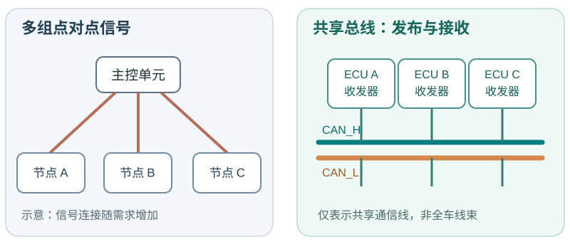
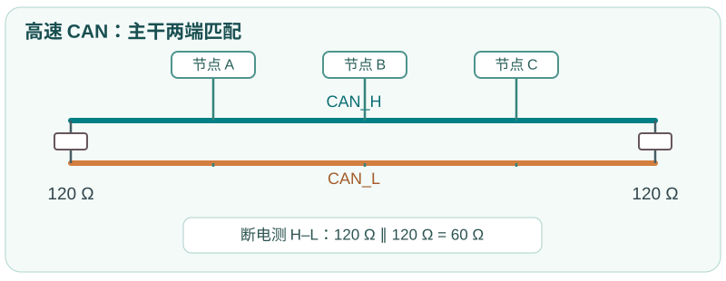

CAN 总线：为什么一对线能让多个控制器协作？
从一辆车里的通信难题出发，逐步理解 CAN 的共享总线、差分电平、终端匹配与工程边界。
假设车速、发动机转速、车门状态都需要送给仪表、车身控制器和诊断设备：每增加一个接收方，就单独拉一组信号线吗？CAN 的关键思路不是让所有设备彼此直连，而是让多个节点共享一条通信介质，用报文标识符说明“这是什么数据”。
每个 ECU 都要和所有 ECU 直接连线吗？
传统的点到点信号连线容易随着功能增加而变复杂。CAN（Controller Area Network，控制器局域网）允许多个控制器在同一条逻辑总线上发送、监听报文；接收方通过标识符过滤感兴趣的数据，而不是每个报文都携带一个“目标设备地址”。

多个节点都能尝试发言，那么如何避免互相把数据撞坏？CAN 采用逐位无破坏仲裁：在仲裁阶段，显性位 0 覆盖隐性位 1，发送隐性却读到显性的节点主动退出竞争，优先级较高的报文继续。更细的仲裁时序将在第三章拆解。
CAN 的发展：可靠通信先于更高带宽
20 世纪 80 年代，随着车内电子设备增多，博世开始开发适合分布式控制的串行网络。按 CAN in Automation（CiA）的历史记录，CAN 于 1986 年在 SAE 大会上公开介绍，随后进入标准化与量产应用。
| 时间 | 事件 | 意义 |
|---|---|---|
| 1983 年 | 博世启动相关串行通信研发 | 降低分散信号连接的复杂度 |
| 1986 年 | 在 SAE 大会上公开 CAN | 明确共享总线的控制通信方案 |
| 1993 年 | CAN 进入 ISO 11898 标准体系 | 协议和物理层逐步规范化 |
| 2012 年 | 博世推出 CAN FD | 扩展单帧数据容量，并允许数据阶段使用更高位速率 |
传统 CAN（Classical CAN）单帧最多承载 8 字节数据；CAN FD 将上限扩至 64 字节。CAN FD 的数据阶段可在启用位速率切换（BRS）时高于仲裁阶段，但实际可用速率由控制器、收发器、线缆与网络时序共同决定，不是任何 CAN FD 网络都固定跑在 8 Mbit/s。参见 Bosch 的 CAN FD 介绍。
今天的车辆可在不同网络分区并用 CAN、CAN FD、LIN 或以太网。CAN FD 是扩展，不等于所有传统 CAN 节点已被取代；不同协议与控制器之间的兼容性必须明确设计。
它通常承载什么？
例如动力总成的状态量、底盘的控制与反馈、车身控制的开关状态、诊断与网关的状态消息。具体是否采用 CAN、使用哪种速率、报文优先级和网络隔离方案，均取决于整车架构、实时性及安全分析，不能仅按“动力一定 500 kbit/s，车身一定 125 kbit/s”套用。
为什么 0 能覆盖 1？
在典型的 ISO 11898-2 高速 CAN物理层中，收发器把控制器的逻辑位转换成两线电压差。显性（逻辑 0）时，CAN_H 典型约 3.5 V、CAN_L 约 1.5 V；隐性（逻辑 1）时，两线都典型约 2.5 V。这些是入门示意的典型值，实际判决须查目标收发器的数据手册与标准约束。CiA 高速 CAN 传输说明。
当前：显性 0 → CAN_H ≈ 3.5 V，CAN_L ≈ 1.5 V，差分 ≈ 2 V。
点击切换是为了比较电压关系；没有模拟驱动器电流、线上传播延迟或接收器容限。
“显性优先”不仅是软件约定，还依赖收发器在仲裁模式下实现的物理层行为。高层的消息优先级取决于标识符仲裁顺序；两者结合，才让多节点争用有确定结果。
为什么两端要接终端电阻？
常见高速 CAN 布线推荐线型主干，节点经尽可能短的支线接入。主干的两个物理端点通常分别放置一只与电缆特性阻抗相匹配的 120 Ω终端电阻，帮助减少反射。这里说的是高速 CAN 的典型方案；其他 CAN 物理层不一定使用同样的终端方式。CiA 网络设计建议。

在总线断电且可确认两只 120 Ω 终端并联、没有其他影响测量的负载时，用万用表测 CAN_H 与 CAN_L 之间的等效电阻，预期约为 60 Ω：
这是电阻并联的推导结果，不是“任何车辆插座都必须测出精确 60 Ω”的规则。测量前应断电、排除主动电路影响，且不能拿该数字替代对线束与节点电路的检查。
CAN 的“最大距离”和“最多节点”有固定答案吗？
没有一个不依赖条件、对所有网络都适用的固定上限。线缆长度、位速率、采样点、收发器延迟、端接、支线和节点负载都会影响可通信的距离。Kvaser 的物理层教程给出了传统高速 CAN 在 1 Mbit/s 时约 40 m的常见经验值；它是特定工程假设下的参考，不是对任意电缆拓扑的保证。
增加节点通常意味着更多输入负载、电容与支线；同时也可能增加总线利用率和等待延迟。实际设计要基于器件数据手册、最坏时序预算、网络负载和硬件实测，而不是规定“支线一律 0.3 m”或“永远预留 30% 空闲”这样的脱离条件的常数。
三分钟验证两个关键直觉
验证 A：断电端接为什么约 60 Ω？
下面是一个可运行的理想电阻计算示例，刻意不模拟寄生电容、收发器内部电路或电缆反射。复制到 Python 3 即可复算：
def parallel_ohms(*resistors):
assert resistors and all(r > 0 for r in resistors)
return 1 / sum(1 / r for r in resistors)
assert parallel_ohms(120, 120) == 60
assert parallel_ohms(120) == 120
print("two 120 Ω terminators:", parallel_ohms(120, 120), "Ω")验证 B：你能区分逻辑状态和电压吗？
问题 1：CAN_H≈3.5 V、CAN_L≈1.5 V，对应哪个逻辑位？
差分电压约 2 V，对应典型高速 CAN 的显性 0。它可以覆盖另一个节点发送的隐性 1。
问题 2：断电测到约 120 Ω，能立即断言“某只终端坏了”吗？
不能。先判断测点、网络是否断电、是否真的只存在两只端接，以及是否被其他电路影响；单个终端、断线或测量位置不同都可能导致读数变化。
问题 3：1 Mbit/s 一定能通信 40 m 吗？
不是保证值。需要结合传播延迟预算、收发器、线缆、支线以及实际误码与波形验证。
进一步查证
- CiA · History of CAN technology：发展年份及标准化脉络。
- Bosch · CAN FD Protocol：经典 CAN 与 CAN FD 数据长度、速率能力差异。
- CiA · CAN HS transmission：典型高、低线电压与终端电阻。
- CiA · Designing a CAN network：线型拓扑及端接建议。
- Kvaser · CAN Physical Layers：传统高速 CAN 的物理限制与经验距离。
第一章建立的是“共享介质—差分电平—端接与时序”这条因果链。下一章将开始拆解一帧 CAN 报文的具体字段。